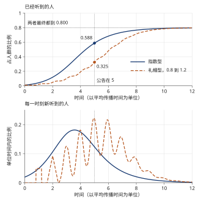

第 12 章 公告与新的公共信息
Bernard 与 Thomas（1989）测量了盈余公告后漂移（post-earnings-announcement drift），即价格在数月里朝盈余意外的方向移动，数据是 1974 年至 1986 年纽约证交所和美国证交所公司的 84,792 个公司季度。他们的盈余意外是用公司自己过去的盈余预测某一季度盈余时的预测误差，再除以较早一段时期里这类误差的离散程度。他们的表 5 按本季度的盈余意外给公司排序，只在到下一季度公告（announcement）为止（含公告日）的五个交易日里，跟踪做多最好的十分之一、做空最差的十分之一的头寸。这些组合完全可以由大约三个月前就能得到的信息确定，所以如果价格充分反映了公共信息（public information），它们的收益平均而言不应含有意外。这一头寸的累计异常收益（abnormal return），即超出这类股票正常水平的收益，小公司为 2.14%，中等公司为 1.33%，大公司为 0.68%，分别占本季度公告后 60 个交易日里漂移（drift）的 40%、29% 和 25%。这五天只有 60 天的 8%，所以如果漂移是平滑的，这五天里会有漂移的 8%。作者的结论是，漂移中不成比例的一大部分集中在下一季度盈余公告之前的几天和公告当天。这些是作者的测量，本书还没有在自己的数据上检验对它们的某种解释。1
第 5 章的根模型（root model）假设所有公开消息（public news）在一开始就已经在那里：来自恒定的外部来源（external source）的一条消息，之后没有任何公告。5.8 节的表 5.1 把这条默认，即一次性注入（one-time injection），同其他默认一起列出，本章去掉它。在还没听到的人当中注意力有限（12.2 节），本章因此在去掉一次性注入的同时也去掉无限注意（unlimited attention），所以表 5.1 在无限注意那一行把本章写在括号里。12.9 节为公告去掉一阶知识（first-order knowledge）（本书的判断；表 5.1）。12.3 节的模型还去掉了永久传播（permanent spreading），这条默认说的是知道的人永远不停止转告，它不在表 5.1 为本章列出的放宽（relaxation）之内。
12.1 开始之后到来的消息
公开消息可以在开始之后到来，形式有定期公告（例如季度盈余）、新闻报道和学术发表。根模型的外部来源于是随时间变化：有消息的冲击，有公告截断（announcement cut-off），即定期公告对传播施加的截断，还有公告前漂移（pre-announcement drift），即价格在公告之前朝公告之后将要到达的位置移动（本书的判断）。一个以恒定速率不断发出同一条消息的来源仍在默认之内（本书的判断；5.2 节）。8.5 节把随时间变化的背景强度（background intensity）留给了本章，例如活动在一天里的规律；本章只讨论它最尖锐的形式，即在设定时刻的公告（本书的判断）。
“公开”在这里有两个意思：可得，指任何人想查就能查到这条消息；看到，指已经有人看到了它（本书的判断；1.6.5 节和第 10 章）。
第一次反应与完整的反应也不同。一份广为播发的报道可以在几秒钟内引起第一次反应，Busse 与 Green（2002）对 2000 年 CNBC 午间节目里的正面股票报道就是这样发现的（5.5 节和 10.9 节），而对盈余消息的完整反应可以持续数月。Bernard 与 Thomas 写道，漂移大部分发生在公告后的前 60 个交易日，约三个月，超过 180 个交易日之后几乎没有统计上显著的漂移的证据。然而在他们的表 1 里，最好与最差盈余意外之间的差在第 241 至 300 天对小、中、大公司都显著为负，他们的正文没有讨论这一结果（本书的判断）。10.2 节给出了对盈余消息的反应有多少来得晚；本章没有印出来自 Busse 与 Green 或 DellaVigna 与 Pollet（2009）的新数字，5.5 节和 10.2 节的边界框（scope box）写明了它们的限制。
公告是一种披露。结算（settlement），即合约按事实的结果支付，不论谁在看都清除所有信息；公开披露（public disclosure）则只通过看到它的人到达价格（本书的判断；5.4 节）。2
12.2 截断与谁在看
DellaVigna 与 Pollet 为一部分分心（distraction）、没有观测到信号的投资者建了模型；在风险厌恶（risk aversion）形式的套利限制（limits to arbitrage）之下，分心的比例越大，价格的即时反应越小，延迟反应越大，而合起来的反应不受影响（工作论文版；10.2 节）。
定期公告在发布时告知正在看的人，所以它截断了多少传播，取决于注意的人所占的比例（本书的判断）。
公告之前的口碑（word of mouth）带来第二个比例。设在 时刻有一次公告，公告之前靠口碑听到的人所占比例为 。如果人口中有比例 的人在注意，而且一个人是否注意同她是否已经听到无关，那么公告刚过，知道的人所占比例是 （本书的推导；数学框 12.1）。DellaVigna 与 Pollet 的模型里没有口碑，把两者放在一起是本书的一步（本书的判断）。
口碑也可能留下始终听不到的人。在 Daley 与 Kendall（1965）的谣言模型（rumor model）里，前提是 6.3 节列出的那些：人口封闭、均匀混合（homogeneous mixing）、没有外部来源、只有一个最初的传播者，而且传播者在第一次碰到已经知道的人时停止。在这些前提下，他们对大人口的确定性版本留下约 0.203 的人始终听不到。这是一个数学结果，本书的任何来源都没有把它同任何真实消息的覆盖面作比较（本书的判断）。始终听不到的人只能从公开披露得知这条消息，所以口碑走完它的过程之后，公告仍然可以使价格变动（本书的判断）。
6.5 节得出了一个可检验的含义：留给公告的价格反应取决于停止规则，在谣言模型里，一旦谣言平息，几乎不取决于口碑开始得多早（本书的推导）。检验需要社交媒体上的讨论量和公告前后的价格；本书没有收集这样的数据，也没有查过免费来源里有没有，所以这个含义尚未检验（untested）（本书的判断）。3
12.3 传播时间的形状
设有两条消息，在公告前五天传到少数几个人手里，听到的人平均在一天之后把消息转告出去：一条是简短的标题，有的人立刻转告，有的人晚得多，所以最可能的延迟是零；另一条是冗长的申报文件，人人都要先花大约一天读完。到公告那天，各有多少人听到了？
在 Karrer 与 Newman（2010）的网络上 SIR 的例子里（8.3 节有描述），指数型的传输时间与“礼帽型”（top hat），后者指一个人在感染之后固定的时间变得有传染性，在更晚的另一个固定时间康复，二者的平均值和传输的总概率相同时，在晚期达到相同的结果，经过的路径不同，礼帽型的路径是一波一波的。
本书的模型在一个更简单的设定里提出同一个问题（本书的推导；数学框 12.1）。人口很大，均匀混合；1% 的人在时刻 0 听到，之后没有人从外部来源听到。一个人的传播时间（spreading time）是从听到到转告这条消息之间的延迟。每个听到的人把她的转告按传播时间的分布分散在时间上，平均一共告诉 个人，这里的数是在没有人听到过的人口里数的。之后她不再告诉任何人，所以传播自行结束，同 SIR 一样（第 6 章），模型也去掉了根模型的永久传播。两种形状的平均传播时间都是 1，即时间单位：标题取指数型，申报文件取礼帽型，其中每个人在听到之后 0.8 到 1.2 的时间里以恒定速率转告。、种子（seed）、窗口和公告的日期是本书的选择。
在公告时，即 ，指数型里有 0.588 的人口听到了，礼帽型里有 0.325，最终两者都会达到 0.800（本书的计算；图 12.1）。公告在第一种情形里还有约 0.41 的人口要告知，在第二种情形里约 0.68（本书的计算），在有限注意（limited attention）之下，它只告知其中注意的那一部分（本书的推导；12.2 节）。在这个模型里，最终听到的人所占的比例只取决于 和种子，与形状无关，而到截断时刻已经听到的人所占的比例还取决于传播时间的平均值和整个形状（本书的推导；数学框 12.1）。

在这个模型里，必须先消化才能转告的消息，例如那份冗长的申报文件，是一波一波传开的，在开始之后至多约 11.6 个平均传播时间之内的任何截断时刻，听到它的人都更少（本书的计算）。在这样的日期发布的公告，对更多的人来说是第一次得到这条消息（本书的判断；8.3 节）。图 12.1 数的是均匀混合下听到的人，没有重现 Karrer 与 Newman 对网络上被感染者的计数（本书的判断）。4
12.4 漂移结束的两种方式
设有一次在周五发布的盈余意外。在 DellaVigna 与 Pollet 的数据里，周五公告之后多出来的漂移在公告后约 30 个交易日变得更容易看出来（工作论文版；10.2 节）。有两种机制可以结束这样的漂移，本书把它们分开（本书的判断）。
- 重新注意（renewed attention）。 原先分心的投资者后来自己去看这条消息。DellaVigna 与 Pollet 指出，在他们的模型里，分心的投资者是晚一期观测到信号还是始终没有观测到，股票收益都一样（工作论文版），所以模型没有说他们什么时候回头去看（本书的判断）。
- 下一次定期公告造成的截断。 下一季度的公告是一次新的披露。它告知当时在看的人，它的盈余显示了本季度的盈余对下一季度的盈余意味着什么（本书的判断）。
Bernard 与 Thomas 的表 5，即本章开头讲的那个，是第二种机制的直接证据，但它没有测量重新注意在两次公告之间结束了多少漂移（本书的判断）。
DellaVigna 与 Pollet 的证据没有裁定是哪一种机制结束了周五公告之后多出来的漂移（本书的判断）。他们的延迟反应从公告后第 2 个交易日到第 75 个交易日（工作论文版）。对每个季度都发布业绩的公司，下一次公告在约三个月之后到来，即约 60 个交易日，所以这个窗口通常也包括了下一次公告（本书的判断）。作者提出的一种解释是，投资者要到因为别的原因重新审视投资决定时，例如得知同一家公司后来的消息，才意识到自己忽略了一次公告（工作论文版）。他们按本季度公告对齐收益，所以他们的数字没有显示每家公司的下一次公告结束了多少多出来的漂移（本书的判断）。
有一个检验本书还没有做，它可以比较漂移在两次公告之间移动多远与在下一次公告前后几天里移动多远，或者比较下一次公告来得早的公司与来得晚的公司，看漂移的结束是否随日历移动（本书的判断）。
漂移什么时候结束与它为什么滞后，是两个不同的问题。Bernard 与 Thomas 的读法是，表 5 与这样一个市场一致，它没有认识到当前盈余对未来盈余的全部含义。这是滞后的一个原因，属于 12.5 节的机制之一；截断关系到漂移什么时候结束（本书的判断）。5
12.5 反应不足的三种机制
反应不足（underreaction）指价格起初的移动小于消息应有的幅度，之后继续朝同一个方向移动。在普通的工作日，延迟反应的水平值（level）混合了本节各个机制与截断的时间安排，所以它没有说明普通的一天里有多少投资者分心（本书的判断）。周五与其他工作日之差把周五多出来的延迟反应分离出来，条件是其他机制和截断的日历在这两类日子里相同（本书的判断）。即使这样，在 DellaVigna 与 Pollet 的模型里，每一类日子的比值也只给出这一天分心的投资者所占比例的下界（工作论文版；10.2 节）。
至少有三种机制可以产生对公开消息的反应不足，每一种都带着一个预测，这个预测指向它多于指向另外两种（本书的判断；表 12.1）。
- 分心，在观测层（observation layer）：有的人没有看到这条消息。在 DellaVigna 与 Pollet 的模型里，如果周五分心的人更多，那么周五公告的即时反应应当更少，随后的延迟反应更多，长期的总反应不变（工作论文版）。
- 错模型（wrong model），在处理层（processing layer）：人们看到了消息，给了它错误的权重。Bernard 与 Thomas 写道，漂移集中在下一次公告前后，除了把它解释为价格没有充分认识到按季节差分后的季度盈余里的序列相关（serial correlation），很难解释，也就是说，一个季度的盈余比一年前同一季度的变化怎样延续到下一季度；他们权衡的解释里没有有限注意（本书的判断）。他们补充说，这种读法与 Foster 的证据一致：忽略这种序列相关的未预期盈余估计，同股票收益的相关性高于反映这种序列相关的估计（据 Bernard 与 Thomas 的转述）。在他们的表 5 里，本季度的盈余意外预测了下一次公告时的平均反应，但下一次公告对分心的截断（12.4 节）也会在那里产生一个可以预测的反应，所以这个反应本身不能把错模型同别的机制区分开（本书的判断）。
- 多计私人信号（overweighting private signals）。 在 Daniel、Hirshleifer 与 Subrahmanyam（1998）的模型里，其前提见 13.4 节，知情的投资者低估自己私人信号（private signal）的误差方差，价格对私人信号过度反应，对公开信号（public signal）反应不足。在置信水平固定时，模型预测与先前的错价（mispricing）无关的事件之后没有系统性的漂移，而对按错价挑选出来的事件，漂移来自反应不足与这种挑选的结合。当置信随结果上升和下降时，即使在与错价无关的事件之后，也有基于事件的可预测性，用作者的话说，这是对盈余公告后漂移的一种不同的解释。这些是模型的结果，本书没有检验过（本书的判断）。
表 12.1 对公开消息反应不足的三种机制
| 机制 | 层 | 指向它的预测（本书的判断） |
|---|---|---|
| 分心，DellaVigna 与 Pollet 的模型（工作论文版） | 观测 | 漂移跟着注意力的日历走，如周五 |
| 对盈余变化怎样延续的错模型，Bernard 与 Thomas 的读法 | 处理 | 收益同忽略这种延续的预测所得的盈余意外更接近（Foster，据 Bernard 与 Thomas 的转述） |
| 多计私人信号，Daniel、Hirshleifer 与 Subrahmanyam 的模型 | 处理，相对权重 | 在置信水平固定时，与先前的错价无关的事件之后没有漂移 |
这里的层是 10.1 节的层，把每种机制放进一层、把每个预测读作指向它的机制，是本书的分类（本书的判断）。
本书通过第 10 章的两层来读围绕公告重播的旧闻（本书的判断；10.7 节）。在 Tetlock（2011）对 1984 年至 2004 年标普 500 公司的新闻的研究里，市场对旧传闻（stale stories）的反应在下一周部分反转（工作论文版）；反转的那一部分符合重复计数（double counting）这种处理偏差，它在上面三种机制之外，也符合消息引来的风潮或买盘，所以这些数据没有指明它的原因（本书的判断；第 13 章）。10.3 节列出了 Merton（1987）对旧闻引起上涨的两种读法。6
12.6 有信息还是只有日期
盈余公告带来关于公司价值的消息。定期的事件也可以在日期之前使价格变动，而完全没有关于价值的消息。
在 Duffie（2010）的慢资本（slow-moving capital）示意模型里，第 1 日的一次公告说，第 32 日将有一次大宗出售，这是所有投资者都预期到的一次发行，80% 的投资者每 32 期才做一次交易决策。因为投资者事先知道将有大量供给释放出来，价格在发行之前下降。这些参数是 Duffie 的选择，在模型里这次出售没有带来关于资产收益的任何消息（本书的判断）。Duffie 还给出一张美国国债发行的图，时间为 1980 年 1 月至 2008 年 3 月，包括 332 次 2 年期国债的拍卖、210 次 5 年期国债的拍卖和 132 次 10 年期国债的拍卖：正如他的模型所提示的，国债的价格随预期的新供给日期临近而下降，随后几天里回升（据 Duffie 的转述）。国债价格在那个日期之后回升，而 12.1 节定义的公告前漂移是朝日期之后的价格移动，所以在一个定期日期之后反转的价格变动，同预期的供给比同消息的泄露更相符；在把一次价格变动读作消息之前，这是要先排除的一种情形（本书的判断）。
事先知道的日期不一定有助于协调（coordination）。在 Abreu 与 Brunnermeier（2003）的泡沫（bubble）模型里，分析已经允许套利者以绝对时间为条件，所以完全预期到的事件对分析没有影响；作者另外讨论了没有预期到的同步事件（synchronizing event），见 12.9 节。
日期也可以过去而没有公告。Milgrom（1981）的可验证披露博弈（verifiable-disclosure game），其中发送者可以证明自己说的话，给出了这里的推理。他的推销员可以报告或隐瞒任何一个事实，但不能谎报，如果这些信息可以通过产品演示来验证，或者有广告真实性的法律，就可能出现这样的特点。在每一个序贯均衡（sequential equilibrium）里，推销员都采用完全披露（full disclosure）的策略，因为买方怀疑任何被隐瞒的信息都是不利的。模型假设买方能察觉卖方在隐瞒信息，Milgrom 没有探讨卖方的事实数目无法验证的情形和沟通有成本的情形。按 Milgrom 的推理，当公司的信息可以验证、投资者知道它有这些信息、披露的成本很低时，投资者可以把公司在通常应当报告的日期保持沉默读作坏消息（bad news）；这几条有一条不成立时，他的博弈没有说沉默揭示了多少（本书的判断）。第 15 章讨论发送者怎样选择什么时候开口。
廉价话语（cheap talk），即说起来不花成本、可以是假的话，是第三种情形，第 15 章讨论它。7
12.7 交易规则的发表
学术发表是另一种公开消息。McLean 与 Pontiff（2016）跟踪了来自 79 项学术研究的 97 个收益预测变量，它们在原始样本结束之后和发表之后少赚了多少，以及这些数字附带的界限，1.6.6 节和第 23 章已经给出。本节补充时间上的情况。在他们的估计里，发表后的头两年，收益停留在原始样本结束一年之后至发表期间的水平，之后进一步衰减，作者提醒，按这种方式划分结果之后，统计功效更低，而且理论没有指导他们怎样划分。发表日期只是市场参与者何时得知某个预测变量的代理。
发表没有带来任何关于公司的新观测；传开的是一条把公开数据变成预期收益的规则（本书的判断）。在这些估计里，发表后第三年和第四年以及第五年之后收益的下降，比头两年更大，这把发表同定期公告区分开，在定期公告那里，在看的人当天就得知消息（本书的判断）。剩下的收益是套利的成本还是风险的补偿，这个问题留给第 23 章，第 24 章梳理关于漂移的证据。8
12.8 打破信息瀑布
按 Bikhchandani、Hirshleifer 与 Welch（1992）的定义，信息瀑布（information cascade）发生在这样的时候：一个人观察到前面的人的行动之后，最优的做法是跟随他前面那个人的行为，而不顾自己的信息。他们的结果 3 说，发布少量公共信息可以打碎一个持续很久的瀑布，这里的少量指一个信号的信息少于单个人的私人信号；他们在上一节的二元信号例子里证明了这一点。按他们的直觉，瀑布只汇总了最初少数几个人的行动所含的信息，所以公共信息只需要抵消瀑布开始之前最后一个人的行动所传达的信息，即使后来有数百万人模仿。他们的命题 2 补充说，如果所有人的信号取自同一个分布，那么瀑布开始之后，所有人都欢迎公共信息。
公开发布也可以重复。在一个数值例子里，一个与每个人的信号取自同一分布、独立抽取的信号有时被公开发布，设 是真值为 1 时信号为高的概率，在 时，第 1,000 个人处于正确的瀑布的概率，没有公开发布时是 0.81，平均每 1,000 人发布一次时是 0.86，平均每 1,000 人发布十次时是 0.98，这些数字来自他们模型的一个例子（本书的判断）。
他们的结果 2 说，在第一个人做决定之前发布公共信息，可以使有的人在事前的意义上变得更差，例子里的公共信息噪声很大（4.7 节），作者补充说，信息量很大的披露很可能使每个人受益。因为这次发布发生在任何人行动之前，本书不把它算作开始之后到来的消息（本书的判断）。
在策略互补（strategic complementarity）之下，公开信号改变每个人对别人行动的预期，这是 12.9 节讨论的内容（本书的判断；11.3.4 节）；第 14 章讨论信息瀑布。9
12.9 协调与共同知识
共同知识（common knowledge）成立的条件是，每个人都知道某件事，每个人都知道每个人都知道它，如此无穷地继续下去。Morris 与 Shin（1998）把市政厅会议（town hall meeting）作为有助于实现共同知识的典型安排：向聚集在同一间屋子里的听众发布公告，每个人都能看到所有其他参与者处在相同的位置。
他们的政策论证从货币危机出发，这种危机可能由高阶信念（higher-order belief）引发，即关于别人相信什么的信念，即使参与者相信基本面（fundamentals）是稳健的。他们写道，在这种情况下，能稳定市场的政策旨在恢复透明度（transparency），也就是试图恢复对基本面的共同知识，而最有效的手段会是一次醒目的公开公告，大家都知道它向所有相关的参与者传达了信息。这是他们 III.A 节里的文字论证，他们的模型里没有公开信号（本书的判断）。
在他们的模型里，当基本面是共同知识时，自我实现的货币攻击导致多重均衡（multiple equilibria），投机者对基本面的信号里只要有少量噪声，均衡就是唯一的。设一次公告使基本面成为共同知识，而且基本面既没有弱到无论别人怎么做攻击都会成功，也没有强到无论别人怎么做攻击都会失败。那么攻击和不攻击都是均衡，恢复共同知识没有解决二者之间的选择（本书的推导）。在有一个公开信号和一个私人信号的正态版本里，只有当私人信号相对于公开信号足够精确时，门限策略的均衡才是唯一的，而足够精确的公开信号会在公开信号的某些取值上带回几个这样的均衡（本书的推导；数学框 12.2）。选出好的均衡，是与恢复共同知识不同的另一步（本书的判断）。协调取决于每个交易者预期别人知道什么，所以就公告而言，本节去掉了根模型的一阶知识，即交易者只需要知道事实这条默认（本书的判断）。第 21 章讨论泡沫、同步风险（synchronization risk）和全局博弈（global game）。
在他们关于泡沫期间套利者的模型里，Abreu 与 Brunnermeier（2003）研究另一类事件，它们不带有关于基本面的信息，纯粹作为协调工具（coordination device），按泊松速率到来。作者写道，这些新闻事件促进同步，所以一般而言，新闻事件的影响可能与它的基本面内容完全不成比例。在这个推广了的设定里，没有希望得到唯一的均衡，他们写道，潜在的同步事件的供给没有限制，这表明参与者把其中哪些当作相关的，是一个更高层次的同步问题，有出现多重均衡的可能。
只有在套利限制不太紧的地方，公告才能作为套利者之间的协调工具，例如卖空者（short seller）之间（本书的判断）。Ljungqvist 与 Qian（2016）研究了一些卖空者，他们公开、免费地发布关于自己目标公司的详细报告（工作论文版）。作者写道，通过发布报告，套利者消除了同步风险，即套利者不知道别人什么时候行动时所承担的风险（23.3.3 节），发布本质上就是一种协调工具，但他们没有看到卖空增加（工作论文版）。这些公司太难直接套利，报告无法在 Abreu 与 Brunnermeier（2002）关于同步风险的工作的意义上充当协调工具，因为对它们的卖空约束（short-sale constraint）相当严格（工作论文版）。在套利限制远没有那么可能起约束作用的地方，Zuckerman（2011）找到了涉及公开公告的同步套利的证据（据 Ljungqvist 与 Qian 的转述；工作论文版）。10
12.10 公共信息的代价
4.7 节里公共信息可以降低福利的四种方式，有三种在这里同公告有关，各有自己的前提；第四种是 Hirshleifer 的分配风险（distributive risk），出现在真实状态于任何交易之前就公布的时候。
在 Morris 与 Shin（2002）的模型里，行为人采取与基本面相称的行动，同时也有协调的动机。参数 给出这种互相猜测的动机的权重，这种动机在社会意义上是无效率的，因为它是零和的；信号是公开的，意思是它的实现值对所有行为人是共同知识；他们的结果把社会福利取为个人收益之和（工作论文版）。在他们的模型里，当行为人没有私人信息（private information）时，更多的公共信息总是增加福利，当他们还有独立的信息来源时，它对福利的影响是不确定的（工作论文版）。 大于 0.5 时，更精确的公共信息只在行为人的私人信息不太精确时才有益，如果他们的私人信息很精确，公共信息精度的任何提高都有害（工作论文版）。作者的经验法则是，当私营部门已经掌握很多信息时，官方部门最好不要公开更多的信息，除非它有把握提供精度非常高的公共信息（工作论文版）；在他们的模型里，公共信息的精度提高到足够大，福利又会上升（本书的推导；数学框 12.2）。他们的模型里没有价格，把它搬到市场上需要一个价格怎样形成的模型（本书的判断）。
在 Bikhchandani、Hirshleifer 与 Welch 的结果 2 里，在他们的例子中，第一次决定之前发布的噪声很大的公共信息，可以使有的人在事前的意义上变得更差（12.8 节）。在 Duffie、Malamud 与 Manso（2009）的模型里，行为人搜寻别人以便从中学习，搜寻成本与搜寻量成比例，更多的公共信息明确地减少私人信息的共享，在有些情形里对福利有净的负面影响，福利按行为人进入市场时的效用来判断。公开信号使新进入者的信息更充分，也可能降低他们搜寻更多信息的动力，减慢信息渗流（information percolation）的速度。
三个模型对公共信息什么时候有帮助、什么时候可能有害的回答，取决于不同的前提：信息相对于第一次行动什么时候到来，私人信息有多精确，协调的动机有多强，私人信息的收集是否有成本。它们都没有表明公告总的来说会降低福利（本书的判断）。11
12.11 本章引用的实证证据
- 盈余漂移。 Bernard 与 Thomas 的 1974 年至 1986 年纽约证交所和美国证交所公司的 84,792 个公司季度。
- 电视报道与周五公告。 DellaVigna 与 Pollet 的 1995 年 1 月至 2006 年 6 月美国季度盈余公告（工作论文版），以及 Busse 与 Green 的 2000 年 6 月至 10 月 CNBC 股票报道，这里只按 5.5 节、10.2 节和 10.9 节报告的内容使用。
- 旧闻。 Tetlock 的 1984 年至 2004 年标普 500 公司的新闻（工作论文版）。
- 发表。 McLean 与 Pontiff 的 97 个预测变量，数据到 2013 年结束。
- 卖空者的报告。 Ljungqvist 与 Qian 的 2006 年 7 月至 2011 年 12 月的 17 个套利者和 113 个目标（工作论文版）。
- 只知道别人的转述。 1980 年至 2008 年的国债拍卖（据 Duffie 的转述），Foster 关于盈余预测的证据（据 Bernard 与 Thomas 的转述），以及 Zuckerman 关于同步套利的证据（据 Ljungqvist 与 Qian 的转述）。
- 模型、论证和计算。 其余一切；参考文献给出了所读每项工作的版本。图 12.1 的模型和数学框 12.2 里单一均衡的条件是本书的推导，图 12.1 和它的数字是本书的计算。
12.12 交易者的自查清单
这些问题没有一个说明该买什么、卖什么，答案好也不会使一笔交易变得安全（本书的判断）。
- 公告带来的是关于价值的消息，还是只有一个固定日期上的供给消息？ 核对：在 Duffie 的慢资本示意模型里，80% 的投资者每 32 期才交易一次，所有投资者都预期到的一次大宗出售使价格在出售之前下降；在他报告的 1980 年至 2008 年的国债拍卖里，国债价格在新供给临近时下降，在之后几天里回升（据 Duffie 的转述；12.6 节）。
- 公告之前有多少人已经听到？ 核对：在图 12.1 里本书的模型中，均匀混合的人口里有 1% 的人在开始时听到，之后没有人从外部听到，每个人平均告诉两个人，之后不再告诉任何人，同样的平均传播时间在五个平均传播时间之后留下 0.588 或 0.325 的人知情，分别对应指数型传播时间或 0.8 到 1.2 之间的礼帽型（本书的计算；12.3 节）。
- 漂移是在等人们再看一次，还是在等下一次公告？ 核对：对 1974 年至 1986 年的纽约证交所和美国证交所公司，Bernard 与 Thomas 发现漂移中不成比例的一大部分出现在到下一季度公告为止（含公告日）的几天里，本书把它读作下一次公告造成截断的直接证据；只按本季度公告对齐的收益，没有显示下一次公告结束了多少漂移（本书的判断；12.4 节）。
- 哪种反应不足的机制在起作用，它的预测成立吗？ 核对：跟着注意力的日历走的漂移指向分心，同忽略盈余变化延续的预测所得的盈余意外更接近的收益指向错模型，与先前的错价无关的事件之后没有漂移符合 Daniel、Hirshleifer 与 Subrahmanyam 在置信水平固定时的模型；下一次公告时本季度盈余意外所预测的反应，既符合被下一次公告截断的分心，也符合错模型（本书的判断；表 12.1 和 12.5 节）。
- 这个公开信号是在打破瀑布、协调行动，还是在挤出私人信息？ 核对：在 Bikhchandani、Hirshleifer 与 Welch 的二元例子里，信息量少于一个人私人信号的公共信息可以打碎一个持续很久的瀑布（12.8 节）。协调套利者需要不太紧的套利限制（本书的判断；12.9 节）。在 Morris 与 Shin 的模型里，该模型没有价格，协调的动机是零和的，权重超过二分之一，公开信号是共同知识，福利取为收益之和，私人信息非常精确，这时更精确的公共信息会降低福利，除非能把它做得非常精确（工作论文版；12.10 节）。在 Duffie、Malamud 与 Manso 的模型里，搜寻成本与搜寻量成比例，公开信号减少私人信息的共享，在有些情形里降低按进入时判断的福利（12.10 节）。
12.13 小结
- 在开始之后到来的公开消息去掉了一次性注入，定期公告只告知正在看的人，所以它截断了多少传播，取决于注意的人所占的比例（本书的判断；12.2 节）。
- 在本书的模型里，均匀混合的人口中有 1% 的人在开始时听到，之后没有人从外部听到，每个人平均告诉两个人，之后不再告诉任何人，同样的平均传播时间，在五个平均传播时间之后的截断时刻，指数型传播时间留下 0.588 的人知情，0.8 到 1.2 之间的礼帽型留下 0.325 的人知情，尽管两者最终都达到 0.800（本书的计算；12.3 节）。
- 有两种机制可以结束漂移，即重新注意和下一次定期公告造成的截断；Bernard 与 Thomas 的表 5，针对 1974 年至 1986 年的纽约证交所和美国证交所公司，是第二种机制的直接证据，而像 DellaVigna 与 Pollet 的研究那样只按本季度公告对齐的收益，没有显示下一次公告结束了多少漂移（本书的判断；12.4 节）。
- 至少有三种机制可以产生对公开消息的反应不足，即分心、关于盈余的错模型和多计私人信号；每一种都带着一个预测，这个预测指向它多于指向另外两种，而下一次公告时的反应与前两种都符合（本书的判断；12.5 节）。
- 带来关于价值的消息的定期公告，与不带来任何这种消息的定期供给不同，后者在 Duffie 的慢资本示意模型里，在大多数投资者只隔一段时间才交易的情况下，使价格在那个日期之前下降（本书的判断；12.6 节）。
- 在 Bikhchandani、Hirshleifer 与 Welch 的二元例子里，信息量少于一个人私人信号的公共信息可以打碎一个持续很久的瀑布，而在他们的一个例子里，第一次决定之前发布的公共信息噪声很大，有的人在事前的意义上最终变得更差（12.8 节）。
- 只有在套利限制不太紧的地方，公告才能协调套利者（本书的判断）；在 Morris 与 Shin 的模型里，该模型没有价格，协调的动机是零和的，权重超过二分之一，公开信号是共同知识，福利取为收益之和，私人信息非常精确，这时更精确的公共信息会降低福利，除非能把它做得非常精确（工作论文版；12.9 节和 12.10 节）。
12.14 写给量化读者的数学框
数学框 12.1 口碑传到截断时刻
模型。 人口很大，均匀混合；在时刻 0，比例 的人已经听到，之后没有人从外部来源听到。一个听到消息已有时长 的人以速率 告诉别人，其中 是传播时间的密度，平均值为 ， 是她在没有人听到过的人口里会告诉的人数；每次转告都发给随机选出的某个人，只有当这个人还没有听到时才告知她。设 是还没有听到的人所占的比例， 是在时刻 第一次听到的人， （本书的推导）。
终点。 每个人的转告加起来是 ，所以把 对全部时间积分，得到 不论 的形状如何（本书的推导）。当 时，它成为数学框 6.1 里 SIR 的终态方程 ，其中 ，。在 时，种子趋于零的情形里始终没有被告知的比例是 0.203，而在 时，最终听到的比例是 0.800（本书的计算）。
起点。 在听到的人还少时， 像 那样增长，其中 是下面这个方程的根 （本书的推导）。对平均值为 的指数型 ，，这个模型是传输速率为 、恢复速率为 的 SIR。对礼帽型，即在听到之后 到 之间以恒定速率转告， 满足 （本书的推导）。注 12 给出了图 12.1 的速率。
公告。 如果时刻 的公告告知注意的人，即人口中比例 的人，而且注意与否同是否已经听到无关，那么公告刚过，知道的人所占的比例是 （本书的推导）。12
数学框 12.2 公开信号的精度与多重均衡
Morris 与 Shin 模型里的福利。 设 为公开信号的精度， 为每个行为人私人信号的精度， 为协调动机的权重，作者发现，当 时，福利随公共信息的精度递减（工作论文版）。对 ，即 12.10 节的情形，因子 在 时最大，等于 ，所以在那里这个条件要求私人信号的精度是公开信号的八倍以上（本书的计算）。从他们关于福利及其导数的式 (3.2) 和 (3.4)（工作论文版）出发，我们重新推导过它们，并推出：公共信息的精度一旦超过界限 ，福利就随 上升，当 无限增大时，趋于它的最高值，这个值高于没有公开信号时的值（本书的推导）。
一个正态的全局博弈。 投机者决定是否攻击一个体制，其基本面为 。所有人都看到 的一个公开信号，精度为 ，每个人还看到一个私人信号，精度为 。当攻击的人所占的比例至少为 时，体制放弃；攻击成功的收益为 1，攻击的成本为 ，。当且仅当 时，对公开信号的每一个取值，门限策略的均衡都有且只有一个，在这种均衡里，每个投机者在自己的私人信号低于某个门限时攻击；而当 时，体制的临界基本面趋于 （本书的推导）。当 超过 时，对公开信号的某些取值，几个这样的均衡又会回来（本书的推导）。这个界限依赖于体制把攻击的人所占的比例同 一一比较，也依赖于固定的收益。第 21 章讨论全局博弈及其前提。13
本章文献
本章引用的文献。所读版本不是期刊版的，条目里写明读的是哪个版本；尾注里的页码按所读的版本。
- Abreu, D., and M. K. Brunnermeier (2002). Synchronization Risk and Delayed Arbitrage. Journal of Financial Economics 66(2–3): 341–360.
- Abreu, D., and M. K. Brunnermeier (2003). Bubbles and Crashes. Econometrica 71(1): 173–204.
- Bernard, V. L., and J. K. Thomas (1989). Post-Earnings-Announcement Drift: Delayed Price Response or Risk Premium? Journal of Accounting Research 27, Supplement: 1–36.
- Bikhchandani, S., D. Hirshleifer and I. Welch (1992). A Theory of Fads, Fashion, Custom, and Cultural Change as Informational Cascades. Journal of Political Economy 100(5): 992–1026.
- Busse, J. A., and T. C. Green (2002). Market Efficiency in Real Time. Journal of Financial Economics 65(3): 415–437.
- Daley, D. J., and D. G. Kendall (1965). Stochastic Rumours. Journal of the Institute of Mathematics and Its Applications 1: 42–55.
- Daniel, K., D. Hirshleifer and A. Subrahmanyam (1998). Investor Psychology and Security Market Under- and Overreactions. Journal of Finance 53(6): 1839–1885.
- DellaVigna, S., and J. M. Pollet (2009). Investor Inattention and Friday Earnings Announcements. Journal of Finance 64(2). 所读为作者 2008 年 2 月 2 日的手稿；没有核对期刊版。
- Duffie, D. (2010). Presidential Address: Asset Price Dynamics with Slow-Moving Capital. Journal of Finance 65(4): 1237–1267.
- Duffie, D., S. Malamud and G. Manso (2009). Information Percolation with Equilibrium Search Dynamics. Econometrica 77(5): 1513–1574. 所读为 arXiv 预印本 0811.3023v1；没有核对期刊版。
- Foster, G. (1977). Quarterly Accounting Data: Time-Series Properties and Predictive-Ability Results. The Accounting Review 52(1): 1–21. 没有读；按 Bernard 与 Thomas（1989）的转述介绍。
- Karrer, B., and M. E. J. Newman (2010). Message Passing Approach for General Epidemic Models. Physical Review E 82: 016101. 所读为 arXiv 预印本 1003.5673v2；没有核对期刊版。
- Ljungqvist, A., and W. Qian (2016). How Constraining Are Limits to Arbitrage? Review of Financial Studies 29(8). 所读为 2014 年 1 月的 NBER 工作论文 19834，副标题为 “Evidence from a Recent Financial Innovation”；没有核对期刊版。
- Lou, D., H. Yan and J. Zhang (2010). Supply Shocks in Liquid Markets. Working paper, Yale School of Management. 没有读；其中的图按 Duffie（2010）的转述引用。
- McLean, R. D., and J. Pontiff (2016). Does Academic Research Destroy Stock Return Predictability? Journal of Finance 71(1): 5–32.
- Merton, R. C. (1987). A Simple Model of Capital Market Equilibrium with Incomplete Information. Journal of Finance 42(3). 所读为 MIT Sloan School of Management 工作论文 1869-87，1987 年 3 月；没有核对期刊版。
- Milgrom, P. R. (1981). Good News and Bad News: Representation Theorems and Applications. Bell Journal of Economics 12(2): 380–391.
- Morris, S., and H. S. Shin (1998). Unique Equilibrium in a Model of Self-Fulfilling Currency Attacks. American Economic Review 88(3): 587–597.
- Morris, S., and H. S. Shin (2002). Social Value of Public Information. American Economic Review 92(5). 所读为 2001 年 7 月的 Cowles Foundation 讨论稿 1312，题为 “The CNBC Effect: Welfare Effects of Public Information”；没有核对期刊版。
- Tetlock, P. C. (2011). All the News That’s Fit to Reprint: Do Investors React to Stale Information? Review of Financial Studies 24(5): 1481–1512. 所读为 2008 年 2 月的工作论文；没有核对期刊版。
- Zuckerman, R. (2011). Synchronized Arbitrage and the Value of Public Announcements. Working paper, Rutgers University. 没有读；按 Ljungqvist 与 Qian（2016）的转述介绍。
注释
1. Bernard 与 Thomas（1989），期刊版：样本在第 6 页；盈余意外的定义在他们图 4 的图题，第 13 页；表 5 的检验、它的组合以及同平滑漂移的比较在 §4.4，第 29–30 页；表 5 在第 30 页。表 5 按第 季度的盈余意外给公司分组，累计围绕第 季度公告的五个交易日 里的异常收益，所以窗口在该公告当天结束。表 5 的注以同一规模十分位的纽约证交所公司为基准衡量异常收益，这可能与他们表 1 背后的基准略有不同，本书不把这两张表看作以完全相同的方式计算的。
2. Bernard 与 Thomas（1989），期刊版：漂移的时间在第 11 页；表 1 第 241 至 300 天在第 14 页，最好与最差十分之一之间的差，小、中、大公司分别为 −1.77%、−1.04% 和 −0.85%，都标为显著。Busse 与 Green 的报道时间和 DellaVigna 与 Pollet 的延迟反应份额，是 5.5 节、10.2 节和 10.9 节的那些，锚点和限制相同。
3. DellaVigna 与 Pollet（2009）所读为作者 2008 年 2 月 2 日的手稿；没有核对 Journal of Finance 的版本，页码按手稿：分心的比例、套利限制以及即时、延迟与合起来的反应在引言，第 1 页；投资者的连续统在 §I，第 3 页。公式 是 book/code/btc_pilot/cutoff.py 里的函数 reached_after_cutoff。Daley 与 Kendall（1965），期刊版：他们 §3 里式 (6) 的根 0.203188，第 44 页。
4. Karrer 与 Newman（2010）所读为 arXiv 预印本 1003.5673v2；没有核对 Physical Review E 的版本，例子在预印本的 §VI。图 12.1 的代码在文件夹 book/code/btc_pilot/ 里。图由 bookfig_ch12.py 里的函数 figure_cutoff 只用 cutoff.py 画出：两条路径来自 exponential_path 和 top_hat_path，截断时刻的值来自 share_at，最终的比例来自 final_informed_share，下图来自 new_informed_rate。测试在 test_cutoff.py 和 test_bookfig_ch12.py 里。时间在步长为 0.01 的网格上推进；每一步新听到的人当作在这一步的中点听到，一步里还没有被告知的人当中听到的比例，等于 1 − exp(−到达其中每个人的期望转告次数)。这个格式使数学框 12.1 里终点的关系在网格上严格成立，在图的网格上同用独立的积分器解出的 SIR 约在 内一致（本书的计算）。其他读数，依次为指数型和礼帽型：时刻 2 为 0.119 和 0.049，时刻 4 为 0.437 和 0.192，时刻 6 为 0.684 和 0.482，时刻 8 为 0.766 和 0.714，时刻 10 为 0.790 和 0.784；达到最终比例的一半分别在约 3.8 和 5.5；指数型的路径在约 11.6 之前一直高于礼帽型的路径，两者在 11.6 处相交；单位时间里新听到的人所占的比例，指数型在约 3.6 处达到峰值 0.182，礼帽型最高的一波在约 5.0 处达到 0.223（本书的计算）。这些值，同正文里的 0.588、0.325 和 0.800 一样，在步长为 0.01 和 0.001 的网格上，印出的位数都相同（本书的计算）。
5. DellaVigna 与 Pollet，手稿：周五公告之后多出来的漂移的时间，以及重新审视自己决定的投资者，在第 12 页；从第 2 个到第 75 个交易日的窗口在他们的表 II，第 36 页；晚一期或始终没有看到信号的分心投资者在脚注 1，第 24 页。Bernard 与 Thomas（1989），期刊版：三个月前确定的组合在 §4.4，第 29 页；对表 5 的读法在 §4.4，第 30 页；60 个交易日，约三个月，在第 11 页。
6. DellaVigna 与 Pollet，手稿：下界在推论 1，第 5 页；命题 1 在第 8 页。Bernard 与 Thomas（1989），期刊版：盈余的序列相关在 §5.2.2，第 33 页，Foster 的证据在 §5.2.2，第 33–34 页。我们没有读过 Foster（1977）。Daniel、Hirshleifer 与 Subrahmanyam（1998），期刊版：中心主题在引言，第 1841 页；误差方差在 §II，第 1845–1846 页；与错价无关的事件和挑选出来的事件在 §II.B.3，第 1850–1851 页，对漂移的不同解释在第 1853 页；固定的置信水平和取决于结果的置信在 §III，第 1855 页；13.4 节给出了前提。Tetlock（2011）所读为 2008 年 2 月的工作论文；没有核对 Review of Financial Studies 的版本。工作论文：反转在摘要；样本在引言，第 2 页。Merton（1987）所读为 MIT Sloan 工作论文 1869-87，1987 年 3 月；没有核对 Journal of Finance 的版本。工作论文：投资者基础在 §IV，第 34 页；风潮在 §IV，第 40 页。
7. Duffie（2010），期刊版：不常交易的投资者在 §IV.A，第 1252 页；预期到的发行和价格下降在 §IV.B，第 1255 页，同页有他的图 8 的图题；国债在 §IV.B，第 1256 页，以及他的图 10 的图题，第 1257 页，图题把来源给作 Lou、Yan 与 Zang（2010），而他的参考文献表把第三作者给作 Jinfan Zhang；我们没有读过那篇工作论文。他的图 10 画的是收益率的抬升，收益率与价格反向变动，按各次发行取平均。Abreu 与 Brunnermeier（2003），期刊版：绝对时间以及完全预期到的和没有预期到的事件在 §6，第 193 页。Milgrom（1981），期刊版：销售接触博弈在 §5，第 387–389 页，命题 6 在第 388 页。
8. McLean 与 Pontiff（2016），期刊版：预测变量在第 7 页；作为代理的发表日期在第 10 页；发表前后按年份的收益以及对此的提醒在他们的图 2，第 17 页；样本期在表 I 的注，第 11 页。
9. Bikhchandani、Hirshleifer 与 Welch（1992），期刊版：定义在摘要，第 992 页；结果 2 及其例子在 §III.A.1，第 1005 页；命题 2、结果 3 及其证明在 §III.A.2，第 1005 页，直觉在第 1006 页；数值例子和他们的表 2 在 §III.A.3，第 1007 页。
10. Morris 与 Shin（1998），期刊版：多重均衡与唯一性在摘要，第 587 页；政策论证和市政厅会议在 §III.A，第 595 页。Abreu 与 Brunnermeier（2003），期刊版：纯粹的协调工具、泊松速率和没有唯一均衡在 §6.1，第 194 页；关于新闻与同步的评论在第 195 页。Ljungqvist 与 Qian（2016）所读为 NBER 工作论文 19834，2014 年 1 月；没有核对 Review of Financial Studies 的版本。工作论文：报告在引言，第 3 页，样本在第 5 页；协调工具在 §3.2，第 20 页，没有协调工具在 §3.2，第 25 页；Zuckerman 在他们的脚注 12，第 25 页，那里他们也引了 Abreu 与 Brunnermeier（2002）；卖空约束在 §5，第 35 页。我们没有读过 Zuckerman（2011）。
11. Morris 与 Shin（2002）所读为 Cowles Foundation 讨论稿 1312，2001 年 7 月；没有核对 American Economic Review 的版本，页码按讨论稿：设定和两种情形在摘要；互相猜测的权重及其零和性质在 §2，第 8 页；公开的含义在 §2.1，第 9 页；权重大于 0.5、对私人信息的条件和经验法则在 §3，第 16 页；福利取为收益之和在 §5，第 20 页。Duffie、Malamud 与 Manso（2009）所读为 arXiv 预印本 0811.3023v1；没有核对 Econometrica 的版本。预印本：公开信号与福利在摘要以及第 7 节和第 7.2 节。
12. 本书对终点的推导：把框里的方程除以 ，得 ，从 0 到 积分，利用 ，括号积分为 。对起点，当 时，把试探解 代入方程，得到框里的条件。对指数型 ，，所以 。在 、 时，指数型的 为 1， 上的礼帽型约为 0.696（本书的计算）；指数型增长得更快，因为它的一部分转告发生在听到之后很快的时候（本书的推导）。对固定的延迟 ，条件写成 ，所以 ，延迟为 1 时是 ，接近礼帽型的 0.696（本书的计算）。例如取 ，在图 12.1 的指数型传播之后，公告刚过时知道的人所占的比例约为 0.75，在礼帽型之后约为 0.59（本书的计算）。这些函数是 book/code/btc_pilot/cutoff.py 里的 final_informed_share、exponential_growth_rate、top_hat_growth_rate 和 reached_after_cutoff，测试在 book/code/tests/test_cutoff.py。
13. Morris 与 Shin（2002），讨论稿：福利的条件在 §3，第 16 页，见他们的图 3.1。他们的式 (3.2) 和 (3.4) 给出均衡行动、福利的表达式及其导数，我们重新推导过：在他们模型的线性均衡里，每个行为人按 行动，所以预期福利，即行动同 的均方距离的相反数，是 ，它对 的导数是 。因此，在 时福利随 下降，这是作者的条件，在这之后上升。由此得出（本书的推导）， 时福利为 ，当 增大时趋于 0。本书对全局博弈的推导：私人信号为 的投机者认为 服从正态分布，均值为 ，精度为 ，其中 是公开信号。如果所有人在门限 以下攻击，那么在 处攻击的人所占的比例是 ，所以体制在 以下放弃，其中 ，当 的概率等于 时，位于 的投机者无差异。消去 后剩下关于 的一个方程，，它的左边在各处都随 下降，当且仅当 ，因为 的斜率至少为 。这时根对每个 都是唯一的；否则有的 给出三个根。当 时，，所以 。第 21 章讨论全局博弈。